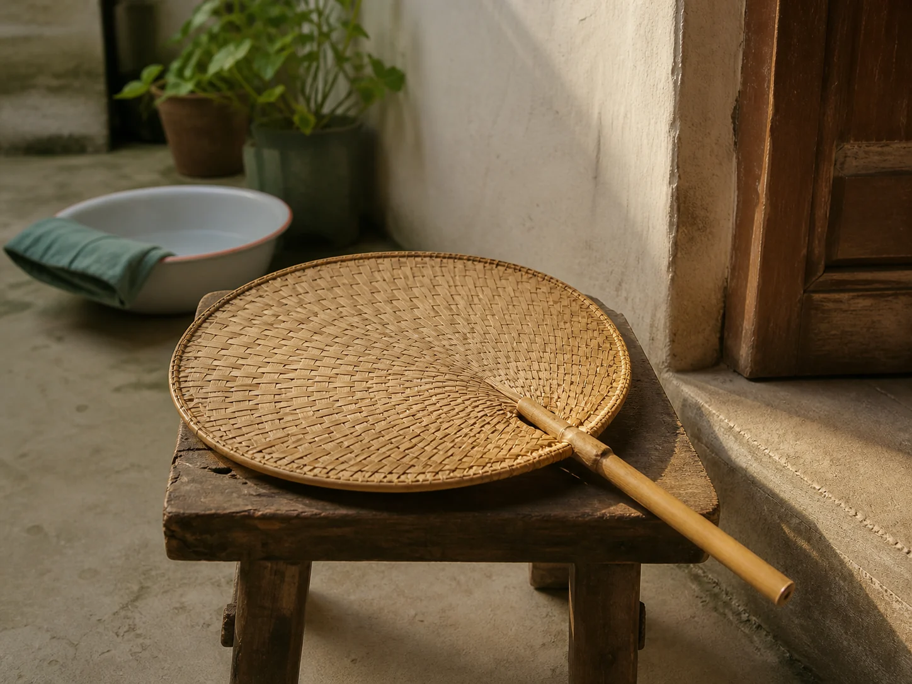

The Bamboo Fan by the Evening Door
The bamboo fan by our evening door belonged to whoever was sitting nearest it. Its woven face moved the courtyard air, and its worn handle carried the marks of many summers.

The handle everyone knew
Our fan had a smooth wooden handle darkened by years of hands. The woven face was not perfectly round anymore; one edge had lifted where a strip of bamboo had loosened. My grandmother kept it beside the evening doorway with the enamel basin and the folded cloth.
There was no assigned owner. Whoever came in from the kitchen or returned from the lane picked it up first. The handle moved from one palm to another without anyone asking, like the glass of water that sat beside the rice pot.
Air that moved with the room
The fan did not make the courtyard cold. It made the air noticeable. A few slow strokes lifted the smell of wet stone and basil from the pots near the wall. Faster strokes lifted the corner of the newspaper used to cover the leftovers.
My grandmother adjusted the rhythm to the conversation. When my uncle talked, she fanned him. When he stopped, she turned the fan toward herself. The movement was small enough to continue while peeling beans, sorting receipts, or listening to the radio.
Folded beside the door
At night the fan was wiped with a dry cloth and placed flat on the low stool. In winter it went behind the wardrobe with the summer bedding. The same storage place held the bamboo wife, whose larger woven frame belonged to the bed rather than the doorway.
When the first hot evening arrived, my grandmother pulled both objects out and checked their edges. The fan returned to the door before anyone mentioned the weather. By then the household had already begun to change its pace.